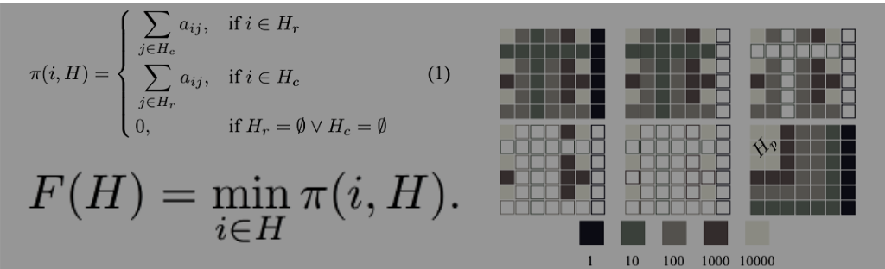
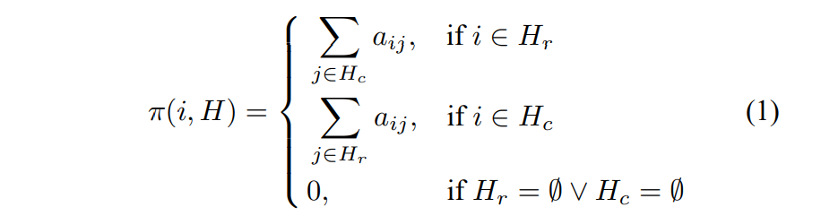
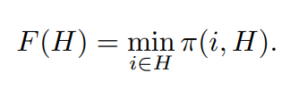
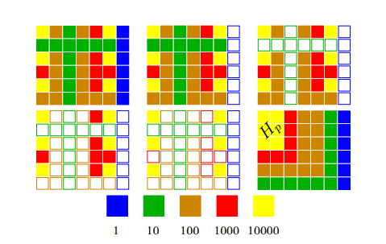

One of the fundamental tasks in Natural Language Processing is the process of assigning tags or categories to text according to its context. The applications of Text Classification is endless, some of them are sentiment analysis, topic labeling, spam detection, and intent detection. In text stream analysis one of the foremost problems is finding an effective method to classify documents fast and correctly.
This is the reason why dimensionality reduction and related methods of representation of significant information are critical to developing a good text classifier.
In such applications, the dimensionality of the term space may be problematic. The classification accuracy degrades with higher dimensions. However, it is observed that even the finest of the text classification algorithms fail to maintain accuracy with high dimensions of the data space. In this regard Principal Component Analysis can be used for feature selection and dimensionality reduction. Here, PCA finds orthogonal dimensions in the space of documents and ranks them according to the variance of data along these new set of dimensions. It means more important principle axis occurs first. More about PCA will be covered in an upcoming blog :)
In this blog, a purely combinatorial approach of obtaining meaningful representations of text data is elaborated. Specifically, two different methods are used — combinatorial principal component analysis (cPCA) and combinatorial support vector machines (cSVM). By using combinatorial principal component analysis (cPCA) and combinatorial support vector machines (cSVM), it would be possible to achieve performance within 2% with a considerably small feature space.
Combinatorics is, in short, the study of finite or countable structures.
Combinatorics is used to calculate the total number of possible outcomes. Combinatorics has considerable applications in mathematical optimization, computer science, ergodic theory and statistical physics. Basically, combinatorics studies countable sets. Probability uses combinatorics to assign probability (value between 0 & 1) to events. Statistics takes sample and compare them to probability models. Those fields of study have massive influence in many other fields. They are key in Machine Learning and Data Science in general. In Fact, Real-world machine learning tasks frequently involve combinatorial structure. How model, infer or predict with graphs, matching, hierarchies, informative subsets or other discrete structure underlying the data By utilizing this combinatorial approach, it’s possible to obtain meaningful representations of text data with a feature space that is on average 50 times smaller than the original space.
Both methods of cPCA and cSVM follow a similar model involving the use of a rectangular matrix representation of the text with a particular score function in order to optimize the result. While each method accomplishes the same goal, they cater to different types of problems. The method cPCA divides features, i.e. the frequencies of words in documents of the data set, of the data (columns of the data matrix) into groups according to their degree of contrast. The ordering of these groups along the scale of contrast constitutes the analogy with the classical PCA. The cSVM model first makes use of the labels of documents, then, feature ranking based on training a linear SVM is done on filtered documents. Finally, feature selection.
Both methods follow a similar model involving the use of a rectangular matrix representation of the text with a particular score function in order to optimize the result. While each method accomplishes the same goal, they cater to different types of problems. Where cPCA would be especially useful for image vision and cSVM would excel with any data that’s representable in an Euclidean space.
Combinatorial PCA is based on the assumption that features that occur frequently in points from the same class are inevitably significant to the classification. These significant features are used to represent the points in a much smaller space. This data is further represented in the form of a matrix, A=||aij||, where rows correspond to points and columns to features (frequency of words).
In order to determine significant sub-matrices of A, we use as the set W the set of indices of rows and columns in the entire data matrix. Below we use the following notations: W = (Wr, Wc), where Wr is a set of indices for rows of the matrix A, Wc is a set of indices for columns of the same data-matrix (|Wr| = n, |Wc| = f, n + f = N). H = (Hr, Hc) is a subset of W (Hr ⊆ Wr, Hc ⊆ Wc). We define, additionally, that π(i, H) = 0 if H doesn’t include at least one element from both sets Wr and Wc (in other words, if Hr not equal to ∅ and Hc not equal to ∅):

The sub-matrix-cluster that we are looking for is defined by the subset of indices H∗ which gives the maximum value for the function.

A set H0 ⊆ W is a strict local maximum of F(H) if: ∀H, H0 ⊂ H ⊆ W ⇒ F(H0) > F(H)
The Hc parts of these local maxima form the combinatorial principal components. These parts have the following interesting properties:
1. They form an ordered chain of sets: H1 ⊃ H2 ⊃ · · · ⊃ Hp
2. This order is mirrored in the sequence: F(H1)< F(H2)<…< F(Hp)
Using the sequence of local maxima, H1, H2, …, Hp, one can easily test different extreme sub-matrices with different levels of word frequency. When representing documents in a matrix where each row corresponds to a document and each column corresponds to a feature, it is clear that this tower structure gives an ordinal scale for both documents and their features. The scale of documents points to which documents contain the most frequent words (of course, after having filtered stop-words), and, which include really rare words; similarly, a related feature scale shows which words are most frequent, and, what is their “location” in documents. In the present study we used for the purpose of learning, only the ordinal scale for document features. As an improvement, we plan to use a similar scale for documents in the near future.

So, if one gets a chain of nesting set of words (parts of our nesting clusters) presented in the considered data-matrix, one can follow the order of the chain and interpret any position (subset of the corresponding words) as a particular subspace in which any classifier program can work. Of course, the most interesting case for us would be if we could construct a good classifier using a low dimension subspace. The fact that we can search candidates of those subspaces in the constructed chain provides a very efficient way to search the candidate subspaces.
In doing this, a combinatorial approach can help tackle problems regarding high dimensionality in text classification, where accuracy tends to degrade quickly with more added dimensions.
This is not only effective in showing how you can improve efficiency in text classification, but also in displaying the wide applications for the field of combinatorics in data science. It’s clear that there’s often great benefit to applying a combinatorial scope to a data-driven problem. In the further blogs, I wish to elaborate more on cSVM and also complete the code implementation :)
07-03-2020